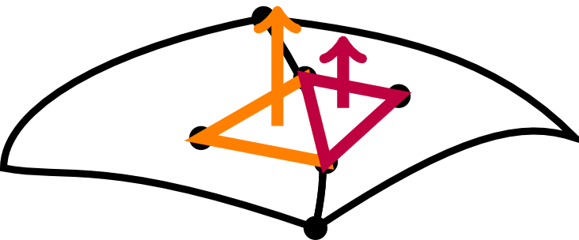
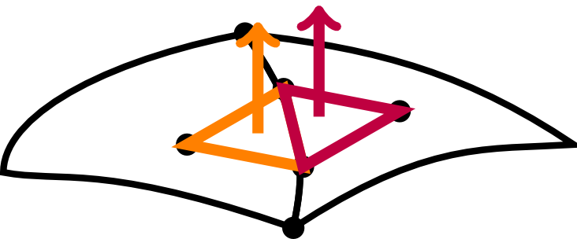
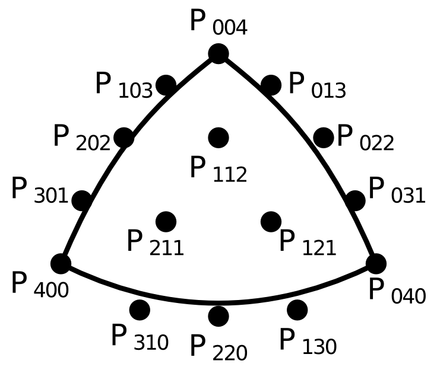
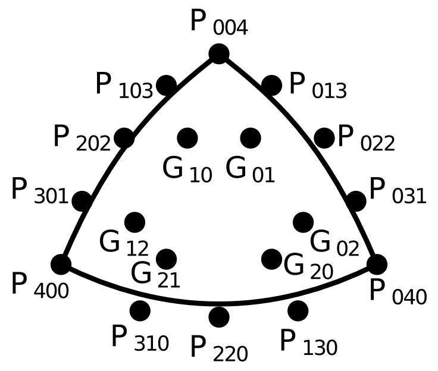
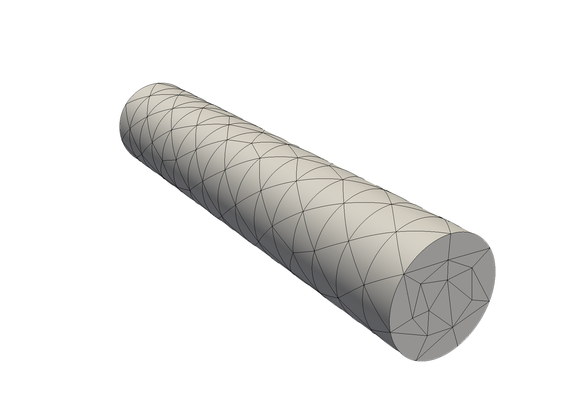

A comparison of $C^0$ and $G^1$ continuous curved tetrahedral meshes for high-order finite element simulations
Daniel W. Zaide, Qiukai Lu, and Mark Shephard
Scientific Computation Research Center, Rensselaer Polytechnic Institute
Introduction
Finite element methods are sensitive to the accuracy and smoothness of the mesh that approximates the curved domain boundaries.
Increasing interelement continuity has demonstrated increased accuracy on quadrilateral and hexahedral meshes.
We perform a preliminary study of the effects of surface triangle continuity, comparing a $C^0$ continuous surface with a $G^1$ continuous surface representation.
Surface Continuity
$C^0$ continuity
normals in different directions
different magnitude
$G^1$ continuity
normals in same direction,
different magnitude
$C^1$ continuity,
normals in same direction,
same magnitude


$4^{\mathrm{th}}$ Order Bézier Triangle
$C^0$ continuity obtained from the Bézier triangle, $4^{\mathrm{th}}$ order being the minimum needed for $G^1$ continuity.
$$ \mathbf{B}(u,v,w) = \displaystyle\sum_{i+j+k=4} \frac{4!}{i!j!k!}u^iv^jw^k\mathbf{P}_{ijk} $$
$G^1$ Continuous Triangle
$G^1$ continuity obtained from the $4^{\mathrm{th}}$ order triangle of Walton and Meek.
And can be computed using the $4^{\mathrm{th}}$ order Bézier equation, blending pairs of points to form the internal Bézier points, e.g. $$ \mathbf{P}_{112} = \frac{1}{v+w}(v\mathbf{G}_{12} + w\mathbf{G}_{21}) $$
Mesh Curving
$G^1$ continuity obtained from the $4^{\mathrm{th}}$ order triangle of Walton and Meek.

Interpolation points are from surface parametrization using the optimal locations of Chen and Babuška.
For $G^1$ control points, the algorithm of Walton and Meek is used except on CAD edges, where edge tangents are used instead of surface normals.
Blended Tetrahedron
The tetrahedral mapping we use the blending approach of Dey et al., to account for differences in exterior and interior shape functions, specifically from $G^1$ surface triangles. $$ \begin{eqnarray*} \mathbf{x}_i(\boldsymbol\xi) &=& (1-\xi_1)^{2} F_1(\xi_{F_1}') + (1-\xi_2)^{2} F_2(\xi') \\ &+& (1-\xi_3)^{2} F_3(\xi') (1-\xi_4)^{2} F_4(\xi') \\ &-& (1 - \xi_1 - \xi_2)^{2} E_1 (\xi') - (1 - \xi_1 - \xi_3)^{2} E_2 (\xi') \\ &-& (1 - \xi_1 - \xi_4)^{2} E_3 (\xi') - (1 - \xi_2 - \xi_3)^{2} E_4 (\xi') \\ & -& (1 - \xi_2 - \xi_4)^{2} E_5 (\xi') - (1 - \xi_3 - \xi_4)^{2} E_6 (\xi') \\ & +& \xi_1^{2} V_1 + \xi_2^{2} V_2 + \xi_3^{2} V_3 + \xi_4^{2} V_4 \end{eqnarray*} $$ where $\boldsymbol\xi = (\xi_1,\xi_2,\xi_3,\xi_4)$ are barycentric coordinates and $F_i$, $E_i$, and $V_i$ correspond to faces, edges, and vertices.
Results
Curved elements implemented in Nektar++, a high-order finite element code.
Meshes are identical except for boundary surfaces and tets.
Accuracy is measured in the $L_2$ and $L_\infty$ norm of solution and $L_2$ norm of solution gradient. $$ \begin{eqnarray*} L_2(u^{h,p}) &=& \left(\int_{\Omega_M} (u^{h,p}-u_{exact})^2 \;\mathrm{d}\Omega_M \right)^{1/2} \\ L_\infty(u^{h,p}) &=& \max_{\Omega_M} \left|u^{h,p}-u_{exact}\right| \\ L_2(\nabla u^{h,p})& =& \left(\int_{\Omega_M} \nabla(u^{h,p}-u_{exact})\cdot \nabla(u^{h,p}-u_{exact}) \; \mathrm{d}\Omega_M \right)^{1/2} \end{eqnarray*} $$
Hagen-Poiseuille Flow
Fully developed, laminar viscous flow through a cylindrical pipe of unit radius and length of 10 in the $z$- direction $$ u_z(\mathbf{x}) = -\frac{1}{4\nu}\left(\frac{\mathrm{d}p}{\mathrm{d}z}\right)(R^2-r^2), \quad p(\mathbf{x}) = 1-\frac{z}{10}, \quad r^2 = x^2 + y^2 $$ with $u_x = u_y = 0$, $\nu = 0.025$, such that $u_z = 1-r^2$.
interp. error.
$C^0$
$1.19\times 10^{-5}$
$G^1$
$6.32\times 10^{-3}$

| interp. error. | ||
|---|---|---|
| $C^0$ | $1.19\times 10^{-5}$ | |
| $G^1$ | $6.32\times 10^{-3}$ |
Poisson's Equation
We first consider Poisson's equation on a sphere of unit radius. $$ -\Delta u(\mathbf{x}) = f(\mathbf{x})$$
Two curved tetrahedral meshes with 94 and 2942 tetrahedra are used.
We choose $u(\mathbf{x}) = (1-r^6)$ such that $u(\mathbf{x}) = 0$ on the boundary.
Poisson's Equation
5$^{\text{th}}$ order solutions
| interp. error. | $L_2(p^{h,p})$ | $L_\infty(p^{h,p}) $ | $L_2(\nabla p^{h,p})$ | ||
|---|---|---|---|---|---|
| $C^0$ | $6.71\times 10^{-4}$ | $8.88\times 10^{-4}$ | $2.10\times 10^{-3}$ | $1.29\times 10^{-2}$ | |
| $G^1$ | $4.88\times 10^{-3}$ | $1.18\times 10^{-2}$ | $1.52\times 10^{-2}$ | $3.21\times 10^{-2}$ | |
| $C^0$ | $2.01\times 10^{-7}$ | $1.96\times 10^{-6}$ | $1.90\times 10^{-5}$ | $1.86\times 10^{-4}$ | |
| $G^1$ | $1.74\times 10^{-5}$ | $4.36\times 10^{-5}$ | $1.35\times 10^{-4}$ | $2.56\times 10^{-4}$ |
Hagen-Poiseulle Flow
$x$-velocity
| p | $L_2(p^{h,p})$ | $L_\infty(p^{h,p}) $ | $L_2(\nabla p^{h,p})$ | ||
|---|---|---|---|---|---|
| $C^0$ | 5 | $8.57\times 10^{-4}$ | $3.68\times 10^{-3}$ | $6.34\times 10^{-3}$ | |
| $G^1$ | 5 | $1.67\times 10^{-3}$ | $1.99\times 10^{-2}$ | $1.36\times 10^{-2}$ | |
| $C^0$ | 6 | $3.10\times 10^{-4}$ | $2.43\times 10^{-3}$ | $3.08\times 10^{-4}$ | |
| $G^1$ | 6 | $1.65\times 10^{-3}$ | $1.56\times 10^{-3}$ | $1.30\times 10^{-2}$ |
Accuracy of $G^1$ dominated by geometric error.
$y-$velocity results are similar.
Hagen-Poiseulle Flow
Pressure
| p | $L_2(p^{h,p})$ | $L_\infty(p^{h,p}) $ | $L_2(\nabla p^{h,p})$ | ||
|---|---|---|---|---|---|
| $C^0$ | 5 | 1.71$\times 10^{-3}$ | $2.40\times 10^{-2}$ | $5.50\times 10^{-2}$ | |
| $G^1$ | 5 | 4.51$\times 10^{-3}$ | $\mathbf{5.25\times 10^{-3}}$ | $\mathbf{2.75\times 10^{-2}}$ | |
| $C^0$ | 6 | 4.40$\times 10^{-4}$ | $6.85\times 10^{-3}$ | $2.12\times 10^{-2}$ | |
| $G^1$ | 6 | 4.47$\times 10^{-3}$ | $\mathbf{4.61\times 10^{-3}}$ | $\mathbf{1.77\times 10^{-2}}$ |
$G^1$ has lower error in several norms, but far from conclusive.
Conclusions
For a simple flow problem, $G^1$ continuous surface patches do not significantly improve solution accuracy compared to similar $C^0$ continuous patches.
The increased interpolation error of $G^1$ triangles appears to outweigh the potential benefits.
Other Lessons
Geometric continuity is far from the only factor; there are relevant metrics to investigate, such as the scaled Jacobian.
The effect of curvature may also play a role, to achieve $G^1$ continuity, the derivatives may have to change rapidly to match direction on triangle edges.
Future Work on Surface Continuity
Future work includes applying $G^1$ continuous boundary representations to other problems, examining its effect on forces, stresses, and other engineering quantities.
If there is shown to be a significant advantage, fifth order and higher $G^1$ triangles will be investigated.
Current Research
Determining curved element validity and analyzing quality using Bézier properties.
Previous work (Remacle and others) introduced an adaptive check using Bézier subdivision.
We are investigating an elevation based adaptive check, studying and comparing the two algorithms.
Current Research
With a robust and efficient validity check in place, we can extend local mesh modification operators for mesh adaptation and quality improvement:
- Refinement (splits), with subdivision
- Coarsening (collapses), with degree reduction
- Reshaping (control point movement), with convex hull property
Investigate variable-order meshes - i.e. highest order on the boundary, lowest order on in the interior.
Questions?

Happy Canadian Thanksgiving!
These slides are available as a PDF here: SLIDES